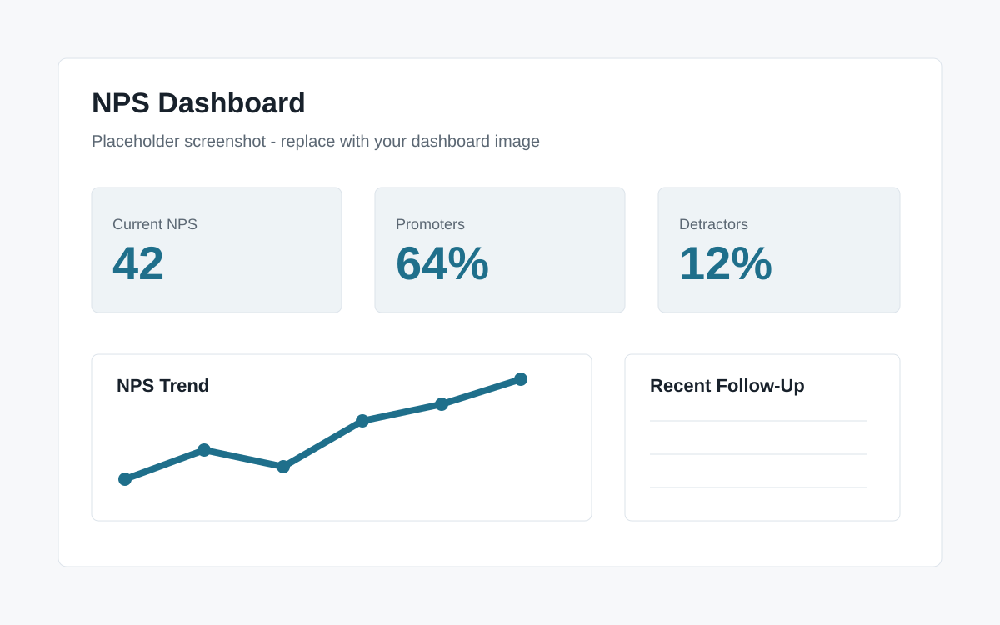

Project summary
This dashboard gives business users a practical way to monitor Net Promoter Score, identify promoters and detractors, and review recent unsatisfied customers.
Business problem
Customer feedback is only useful when it can be reviewed quickly and acted on. Teams need to see whether satisfaction is improving, where negative responses are coming from, and which customers should be contacted soon.
Data/reporting challenges
NPS data can include survey timing issues, inconsistent customer identifiers, free-text comments, and small sample sizes. The report needs to show trends without hiding the individual customer records that require action.
Solution approach
The dashboard separates promoters, passives, and detractors, then combines score trends with a table of recent unsatisfied customers. This supports both executive review and operational follow-up.
Key features
- NPS score tracking over time
- Promoter, passive, and detractor segmentation
- Recent unsatisfied customer list for follow-up
- Trend analysis by date, branch, or customer segment
- Summary metrics paired with detailed customer records
Screenshots

What this demonstrates
This project demonstrates customer satisfaction reporting, score categorization, trend analysis, and dashboard design that keeps action items visible.
Tools used
SQL, Power BI, NPS metrics, customer analytics, trend reporting